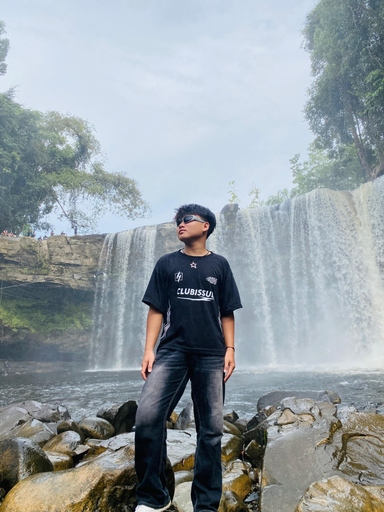

Portfolio RGB Futuristik
Website portfolio pribadi dengan aksen glow dan nuansa gelap, dibangun untuk menampilkan identitas sebagai digital creator.
Digital Creator dari Tebas
Saya Risky Ramadhan, siswa Rekayasa Perangkat Lunak kelas XII RPL 1 asal Tebas. Saya suka mengubah ide sederhana menjadi tampilan digital yang hidup — mulai dari desain antarmuka, coding, sampai eksperimen kecil dengan AI. Bagi saya, setiap project adalah cara belajar sambil berkarya.

Nama saya Risky Ramadhan, saat ini duduk di kelas XII RPL 1 dan tinggal di Tebas. Sejak masuk jurusan Rekayasa Perangkat Lunak, saya tertarik pada bagaimana desain dan kode bisa bekerja sama membangun pengalaman digital yang enak dipakai. Di luar jam sekolah, saya sering iseng membuat tampilan web baru atau mempelajari hal-hal seputar AI dan desain antarmuka.
Website portfolio pribadi dengan aksen glow dan nuansa gelap, dibangun untuk menampilkan identitas sebagai digital creator.
Kumpulan latihan tampilan antarmuka dari tugas dan eksplorasi mandiri selama belajar di kelas XII RPL 1.
Eksperimen kecil menggabungkan alat AI dengan proses desain untuk mempercepat ide menjadi tampilan nyata.
Tertarik berkolaborasi atau sekadar ingin ngobrol soal project? Silakan hubungi saya.
Kirim Email